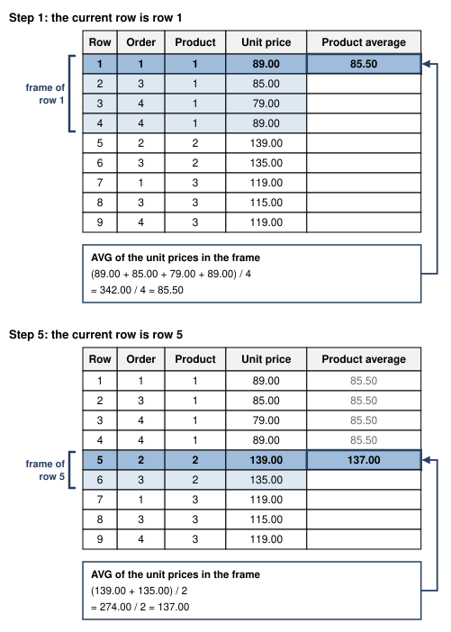
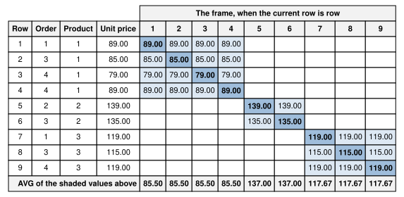
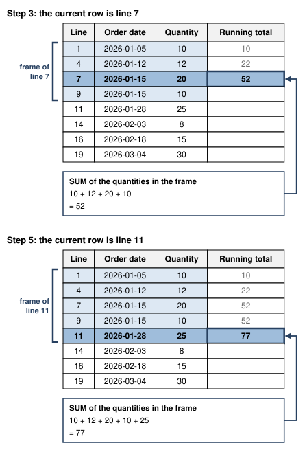
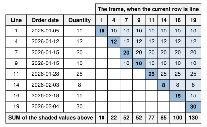
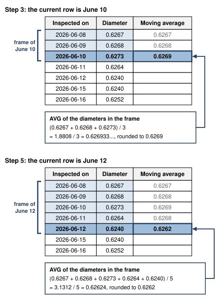
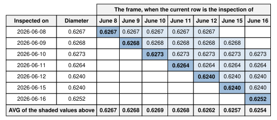
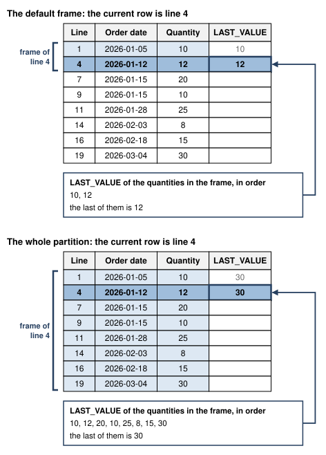
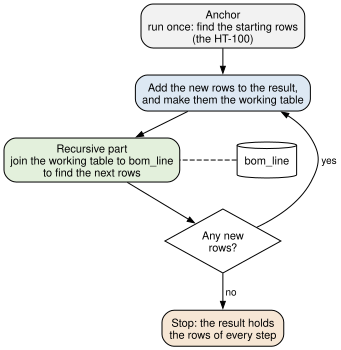
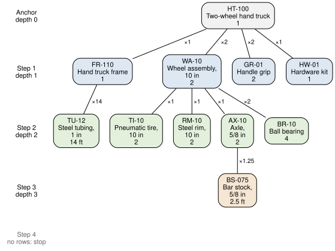

SELECT product_fk, unit_price, SUM(quantity) AS units
FROM distribution.order_line
GROUP BY product_fk;4 Aggregation and Analytical Queries
NoteLearning objectives
After reading this chapter you should be able to:
- summarize data with aggregate functions, GROUP BY, and HAVING
- form the groups of a query by hand and compute each group’s aggregate before running it
- classify and recode values with CASE expressions, and build a cross tab with them
- compute running totals, rankings, and moving averages with window functions
- write recursive queries over hierarchical data such as a bill of materials
- answer operational questions about production, inventory, and quality data with SQL
The queries of Chapter 3 return rows: the orders that are late, the customers who ordered a cart. Many of the questions an engineer is asked are about many rows at once. How many units of each product did we ship last quarter? What is the average time a work order spends on the floor? Is the axle diameter drifting? Each is answered by a single number, or a single number for each group of rows, computed from rows the reader never sees one by one.
This chapter presents the parts of SQL that summarize. We begin with the aggregate functions, which reduce a set of rows to one value, and with GROUP BY, which forms the groups they are applied to. HAVING then filters the groups, and the CASE expression classifies rows so that they can be counted by class. Window functions compute a summary for each row without collapsing the rows, which is what running totals and moving averages need. Recursive queries follow a chain of rows, such as the components of an assembly, to any depth. The chapter ends with the analytical queries that industrial data calls for: on-time performance, inventory position, and control limits.
The habit of Chapter 3 continues. Before the database groups rows, we group a few of them by hand, write down each group and its aggregate, and then check that the query agrees.
TipFollowing along
The hand-evaluated examples use stages D5 and P3, as in Chapter 3. The examples that need volume use stage G, the year of history: loading through-g.sql gives you every table of the book’s database with twelve more months of orders, shipments, and inspections (Section C.2).
4.1 The shape of an analytical query
This section places the tools of this chapter in the shape of a SELECT statement, and extends the order in which the database evaluates its clauses.
Recall from Section 3.1.1 that every query has the shape of Listing 3.1. This chapter presents the two clauses of that template that Chapter 3 did not use, GROUP BY and HAVING. Its other tools are expressions, which are written inside clauses the reader already knows, and a recursive form of the WITH of Section 3.10. Listing 4.1 shows where each is written. Since a group or an order may be formed by any expression, not only a column, the template’s GROUP BY and ORDER BY now take an expression.
[WITH [RECURSIVE] name AS (query), ...]
SELECT [DISTINCT] expression AS alias,
aggregate(...) [FILTER (WHERE condition)],
window_function(...) OVER (...), ...
FROM schema.table
[WHERE condition]
[GROUP BY expression, ...]
[HAVING condition]
[ORDER BY expression [DESC], ...]
[LIMIT count];Table 4.1 lists the tools, what kind of thing each is, and where it may be written. An expression computes a value, so it may appear wherever a value may: the CASE expression, for example, may stand in the SELECT list, in WHERE, in GROUP BY, in ORDER BY, and inside an aggregate.
| Tool | What it is | Where it may be written | Presented in |
|---|---|---|---|
| Aggregate function | An expression, one value for each group | SELECT, HAVING, ORDER BY |
Section 4.2 |
GROUP BY |
A clause | After WHERE |
Section 4.2 |
HAVING |
A clause | After GROUP BY |
Section 4.3 |
CASE |
An expression, one value for each row | Wherever a value may go | Section 4.4 |
FILTER |
A condition attached to an aggregate | After the aggregate | Section 4.4 |
| Window function | An expression, one value for each row | SELECT, ORDER BY |
Section 4.5 |
WITH RECURSIVE |
A common table expression that refers to itself | Before SELECT |
Section 4.6 |
The order of evaluation of Section 3.1.1 gains one step. Window functions are computed after the SELECT list and before DISTINCT, so the database, at least in principle, evaluates a query in seven steps:
FROMnames the table the rows come from, or joins several.WHEREkeeps the rows that satisfy its condition.GROUP BYdivides the rows that were kept into groups and computes each group’s aggregates, andHAVINGkeeps the groups that satisfy its condition.SELECTcomputes the columns of the result, one row for each row or group that was kept.- Window functions are computed over the rows of step 4.
DISTINCT, if present, removes repeated rows.ORDER BYsorts the result, andLIMITkeeps its first rows.
A common table expression comes before all seven: in principle, the query that follows WITH is evaluated first, and the main query reads its result in FROM as a table.
The order explains where each tool may be written. WHERE cannot test an aggregate, since no group exists at step 2; that test belongs in HAVING. Neither WHERE nor HAVING can test a window function’s result, since both are evaluated before step 5, and PostgreSQL refuses a window function in either. A window function may, however, rank the groups of step 3, since their aggregates already exist when it is computed.
For example, a sales manager asks for each customer’s number of orders in the year of history, with the customer’s rank. “In the year” says which rows, so it becomes a WHERE clause. “Each customer’s” says into which groups, a GROUP BY, and “number of orders” is the aggregate COUNT(*). “Rank” is a window function computed over the groups, at step 5. Section 4.5 writes the query, and then shows what changes when the manager wants only the top five ranks, a condition on a window function’s result. Reading a request against Table 4.1 in this way tells you which tools its query needs, and the order of evaluation tells you where each is computed.
The next section presents the aggregate functions and GROUP BY, steps 3 and 4 of the order.
4.2 Aggregate functions and grouping
This section presents the aggregate functions, which compute one value from many rows, and the GROUP BY clause, which divides the rows into groups and computes the aggregates once for each group.
An aggregate function takes a column of values from a set of rows and returns one value. SQL provides five that every database shares: COUNT, SUM, AVG, MIN, and MAX. Used in the SELECT list of a query without GROUP BY, an aggregate is computed over every row that the WHERE clause kept, and the result has exactly one row. The following query summarizes the 22 order lines of stage D5.
SELECT COUNT(*) AS lines,
SUM(quantity) AS units,
MIN(unit_price) AS lowest_price,
MAX(unit_price) AS highest_price,
AVG(unit_price) AS average_price
FROM distribution.order_line;| lines | units | lowest_price | highest_price | average_price |
|---|---|---|---|---|
| 22 | 215 | 79.00 | 139.00 | 111.1818181818181818 |
Table 4.2 says that 22 lines ordered 215 units at prices from $79.00 to $139.00. COUNT(*) counts rows. The other four take a column, or any expression, and summarize its values. Notice the average: PostgreSQL keeps every digit it computes, and ROUND (Section 3.5) shortens it when a report needs fewer.
Aggregates treat NULL in one consistent way: they ignore it. COUNT(*) counts rows, whatever they hold, but COUNT(column) counts only the rows where the column is not NULL, and SUM, AVG, MIN, and MAX summarize only the values that are present. For example, recall that two of the twelve orders of stage D5 have no requested ship date:
SELECT COUNT(*) AS orders,
COUNT(requested_ship_date) AS with_requested_date
FROM distribution.customer_order;| orders | with_requested_date |
|---|---|
| 12 | 10 |
The difference in Table 4.3 is usually what a request means. The number of orders is 12, and the number with a requested ship date is 10. AVG behaves the same way, which is sometimes a trap. The average of completed_on - released_on over the ten work orders of stage P3 is the average over the seven completed ones, since the difference is NULL for the three that are open (Table 3.29). That average says how long finished work took, not how long work takes, because the three orders still on the floor, some of them already late, are left out without a word.
When no rows reach an aggregate, COUNT returns 0, and the other four return NULL: there is no sum, average, or extreme of nothing. For example, at stage D5 no order line is for product 4, the GC-400, so SUM(quantity) over its lines is NULL, not zero. A report that should show zero writes COALESCE(SUM(quantity), 0).
An aggregate over the whole table answers one question. Usually the request is for the same summary for each of several groups: units by product, orders by customer, defects by type. GROUP BY names the columns that define the groups. The database divides the rows that the WHERE clause kept into groups, one for each different value of those columns, and computes every aggregate once per group. The result has one row for each group.
Let’s form the groups by hand. We take the order lines of the first four orders of stage D5 and ask for the units ordered of each product. The rows, sorted by product so that the groups are easy to see, are:
SELECT customer_order_fk, product_fk, quantity
FROM distribution.order_line
WHERE customer_order_fk <= 4
ORDER BY product_fk, customer_order_fk;| customer_order_fk | product_fk | quantity |
|---|---|---|
| 1 | 1 | 10 |
| 3 | 1 | 12 |
| 4 | 1 | 10 |
| 4 | 1 | 20 |
| 2 | 2 | 6 |
| 3 | 2 | 4 |
| 1 | 3 | 4 |
| 3 | 3 | 6 |
| 4 | 3 | 5 |
Grouping by product_fk puts the nine rows of Table 4.4 into three groups. We then compute the aggregates of each group from its rows:
| Product | Quantities in the group | Lines, COUNT(*) |
Units, SUM(quantity) |
|---|---|---|---|
| 1 | 10, 12, 10, 20 | 4 | 52 |
| 2 | 6, 4 | 2 | 10 |
| 3 | 4, 6, 5 | 3 | 15 |
Table 4.5 predicts three rows, and the query produces them:
SELECT product_fk,
COUNT(*) AS lines,
SUM(quantity) AS units
FROM distribution.order_line
WHERE customer_order_fk <= 4
GROUP BY product_fk
ORDER BY product_fk;| product_fk | lines | units |
|---|---|---|
| 1 | 4 | 52 |
| 2 | 2 | 10 |
| 3 | 3 | 15 |
Notice what disappears when rows are grouped. The result of Table 4.6 has one row per product, so a column that differs from row to row within a group, such as quantity or unit_price, has no single value to show. SQL therefore allows only two kinds of expression in the SELECT list of a grouped query: the columns named in GROUP BY, and aggregates. Asking for another column is an error:
ERROR: column "order_line.unit_price" must appear in the GROUP BY clause or be used in an aggregate function
LINE 1: SELECT product_fk, unit_price, SUM(quantity) AS units
^The message offers the two repairs. Grouping by unit_price as well makes a group for each product and price, which is a different question. Aggregating it, as AVG(unit_price) or MAX(unit_price), answers a question about the prices of each product. Which repair is right depends on the request, and the database cannot choose for you.
A grouped query often joins tables first, so that the groups can be labeled with something a reader recognizes. The following query totals the units ordered of each product over the year of history in stage G, from April 2026 through March 2027, and labels each group with the product’s number:
SELECT p.product_number,
COUNT(*) AS lines,
SUM(l.quantity) AS units
FROM distribution.order_line AS l
JOIN distribution.customer_order AS o
ON o.customer_order_pk = l.customer_order_fk
JOIN distribution.product AS p
ON p.product_pk = l.product_fk
WHERE o.order_date >= DATE '2026-04-01'
AND o.order_date < DATE '2027-04-01'
GROUP BY p.product_number
ORDER BY p.product_number;| product_number | lines | units |
|---|---|---|
| GC-300 | 317 | 4030 |
| GC-400 | 132 | 1639 |
| HT-100 | 295 | 3584 |
| HT-200 | 299 | 3636 |
The query of Table 4.7 groups by product_number, the alternate key, so each group is one product. Grouping by a column that is not a key is different: two products with the same description would fall into one group. When you group by a descriptive column such as a name, you should group by the key as well, GROUP BY p.product_pk, p.description, even when the key is not displayed.
PostgreSQL relaxes the rule of the SELECT list in one case. When a query groups by a table’s primary key, it may select any other column of that table, since the key determines those columns’ values. The SQL standard allows this, but many databases do not, and this book groups by every column it selects.
Recall from Section 4.1 that GROUP BY is step 3 of the order of evaluation, and that the SELECT list is computed at step 4, one row for each group. That order is the reason for the rule of the SELECT list: by step 4 each group is one row, and a column whose value differs within a group has no one value to show. The next section presents HAVING, the rest of step 3.
4.3 Filtering groups
This section presents the HAVING clause, which keeps the groups whose aggregates satisfy a condition.
WHERE filters rows before they are grouped, so it cannot test an aggregate: the aggregate does not exist until the groups are formed. HAVING holds a condition that is tested once for each group, after grouping, and it may use aggregates. For example, the sales manager asks which customers placed more than 40 orders in the year of history:
SELECT c.customer_number, c.name,
COUNT(*) AS orders
FROM distribution.customer AS c
JOIN distribution.customer_order AS o
ON o.customer_fk = c.customer_pk
WHERE o.order_date >= DATE '2026-04-01'
AND o.order_date < DATE '2027-04-01'
GROUP BY c.customer_number, c.name
HAVING COUNT(*) > 40
ORDER BY orders DESC, c.customer_number;| customer_number | name | orders |
|---|---|---|
| C-1014 | Green Country Hardware | 45 |
| C-1023 | Sunflower Hardware | 45 |
| C-1003 | Cedar Creek Home Center | 44 |
| C-1006 | Lakeside Distributors | 43 |
| C-1001 | Riverside Hardware | 42 |
The query of Table 4.8 uses both clauses, and each does the job only it can do. WHERE keeps the orders of the year, row by row, before any group exists; HAVING keeps the customers whose count of those orders exceeds 40. Moving the date condition into HAVING would be an error, since order_date is neither grouped nor aggregated. Moving the count condition into WHERE would be an error too, since no count exists when WHERE is evaluated. Thus, a condition on a row belongs in WHERE, and a condition on a group belongs in HAVING.
COUNT(DISTINCT column) counts the different values in a group rather than the rows. It answers requests such as “how many different products has each customer ordered”, where COUNT(*) would count order lines. The distinction matters most after a join, because the fan-out of Section 3.6 repeats rows, and COUNT(*) counts every repeat.
Recall from Example 3.5 that a request with the word every can be answered by a double NOT EXISTS. Counting gives a second method. An operator is certified on every machine in Machining when the number of Machining machines on which the operator holds a certification equals the number of Machining machines:
SELECT o.employee_number, o.name
FROM production.operator AS o
JOIN production.certification AS c
ON c.operator_fk = o.operator_pk
JOIN production.machine AS m
ON m.machine_pk = c.machine_fk
WHERE m.work_center_fk = 2
GROUP BY o.employee_number, o.name
HAVING COUNT(*) = (SELECT COUNT(*)
FROM production.machine
WHERE work_center_fk = 2);| employee_number | name |
|---|---|
| E-202 | James Carter |
Table 4.9 agrees with Table 3.49: James Carter. The joins keep one row for each certification an operator holds on a Machining machine, the groups count them per operator, and HAVING compares each count with the subquery’s count of Machining machines, which is 2. Counting certifications counts machines only because the alternate key (operator_fk, machine_fk) of the certification table allows at most one row for each operator and machine; without it, a repeated certification would be counted twice.
The two methods disagree in one case. For the Assembly work center, which has no machines, the double NOT EXISTS returned every operator. The counting query returns none: no operator holds a certification on an Assembly machine, so the joins keep no rows, no groups are formed, and there is nothing for HAVING to compare with zero. Neither answer is wrong in itself. They answer the question “who is certified on every machine of a work center that has none” in two different ways, and you should decide which the request means before you choose a method.
An aggregate cannot be applied to another aggregate in the same query. A request such as “the busiest month’s number of orders” needs the count for each month first, and then the largest of those counts. Recall from Section 3.10 that a common table expression names a step. The first step groups; the second summarizes the groups:
WITH monthly AS (
SELECT EXTRACT(YEAR FROM order_date) AS year,
EXTRACT(MONTH FROM order_date) AS month,
COUNT(*) AS orders
FROM distribution.customer_order
WHERE order_date >= DATE '2026-04-01'
AND order_date < DATE '2027-04-01'
GROUP BY EXTRACT(YEAR FROM order_date),
EXTRACT(MONTH FROM order_date)
)
SELECT year, month, orders
FROM monthly
WHERE orders = (SELECT MAX(orders) FROM monthly);| year | month | orders |
|---|---|---|
| 2027 | 3 | 65 |
The final query of Table 4.10 keeps every month whose count equals the largest, so a tie for the busiest month would show both months, which ORDER BY orders DESC LIMIT 1 would not (Section 3.4). The next section presents the expression that lets a query group rows by a classification that no column holds.
4.4 CASE expressions
This section presents the CASE expression, which chooses a value by testing conditions in turn, and its main uses: classifying rows, counting them by class, and turning rows into columns.
A CASE expression lists conditions and the value to return for each. The database tests the conditions in order, returns the value of the first that is true, and returns the value after ELSE if none is true, or NULL if there is no ELSE. For example, the production manager classifies each work order of stage P3 as early, on time, late, or open:
SELECT work_order_number, due_on, completed_on,
CASE
WHEN completed_on IS NULL THEN 'open'
WHEN completed_on < due_on THEN 'early'
WHEN completed_on = due_on THEN 'on time'
ELSE 'late'
END AS status
FROM production.work_order
ORDER BY work_order_number;| work_order_number | due_on | completed_on | status |
|---|---|---|---|
| WO-7001 | 2026-01-16 | 2026-01-15 | early |
| WO-7002 | 2026-01-13 | 2026-01-12 | early |
| WO-7003 | 2026-01-30 | 2026-02-02 | late |
| WO-7004 | 2026-02-06 | 2026-02-05 | early |
| WO-7005 | 2026-02-09 | 2026-02-09 | on time |
| WO-7006 | 2026-02-20 | 2026-02-24 | late |
| WO-7007 | 2026-02-27 | 2026-02-26 | early |
| WO-7008 | 2026-03-13 | NULL | open |
| WO-7009 | 2026-03-16 | NULL | open |
| WO-7010 | 2026-03-27 | NULL | open |
The first WHEN in Table 4.11 catches the open work orders, so the later comparisons are made only for completed ones, whose completed_on is not NULL. Had there been no test for NULL, an open work order would have reached ELSE, since every comparison with its NULL completion date is unknown (Section 3.3), and it would have been called late. An unknown condition is not true, so the row passes on to the next WHEN; a test for NULL placed last would still catch it. Thus, a CASE that compares a column that may be NULL needs its own test for NULL, and placing that test first lets every later condition assume a value.
When every condition compares one expression with a value, CASE has a shorter form. It names the expression once, after CASE, and each WHEN gives a value to match. For example, the part list spells out each unit of measure:
SELECT part_number, unit_of_measure,
CASE unit_of_measure
WHEN 'EA' THEN 'each'
WHEN 'FT' THEN 'feet'
ELSE 'unknown'
END AS unit
FROM production.part
WHERE part_number LIKE 'T%';| part_number | unit_of_measure | unit |
|---|---|---|
| TU-12 | FT | feet |
| TI-10 | EA | each |
| TR-300 | EA | each |
| TR-400 | EA | each |
A CASE expression can appear anywhere an expression can, including inside an aggregate and in GROUP BY. Together these count rows by a class that no column holds. The quality department classifies each measurement of stage G as below, within, or above its characteristic’s specification limits, and counts each class for each characteristic:
SELECT ch.characteristic_pk, ch.name,
CASE
WHEN m.measured_value < ch.lower_spec_limit
THEN 'below'
WHEN m.measured_value > ch.upper_spec_limit
THEN 'above'
ELSE 'within'
END AS class,
COUNT(*) AS measurements
FROM quality.measurement AS m
JOIN quality.characteristic AS ch
ON ch.characteristic_pk = m.characteristic_fk
GROUP BY ch.characteristic_pk, ch.name, class
ORDER BY ch.characteristic_pk, class;| characteristic_pk | name | class | measurements |
|---|---|---|---|
| 1 | Diameter | above | 1 |
| 1 | Diameter | within | 138 |
| 2 | Length | below | 1 |
| 2 | Length | within | 138 |
| 3 | Weld strength | below | 5 |
| 3 | Weld strength | within | 53 |
| 4 | Coating thickness | below | 1 |
| 4 | Coating thickness | within | 57 |
| 5 | Coating thickness | above | 1 |
| 5 | Coating thickness | below | 1 |
| 5 | Coating thickness | within | 57 |
Table 4.13 groups by the alias class, which PostgreSQL allows in GROUP BY as a convenience; the SQL standard requires the CASE expression to be repeated there. Notice how the weld strength is classified. Its upper limit is NULL, so the second condition is unknown for every weld and no weld is ever called “above”. That is right for a one-sided specification, but it is right because “within” is the value after ELSE, not by design. A classification that must treat a missing limit in some other way should say so with its own WHEN ... IS NULL test.
A CASE expression may stand anywhere a value may, and in ORDER BY it sorts by an order that no column holds. For example, the production manager’s morning list puts the open work orders first, the late ones next, and the rest after, each group by its due date:
SELECT work_order_number, due_on, completed_on
FROM production.work_order
ORDER BY CASE
WHEN completed_on IS NULL THEN 1
WHEN completed_on > due_on THEN 2
ELSE 3
END,
due_on, work_order_number;| work_order_number | due_on | completed_on |
|---|---|---|
| WO-7008 | 2026-03-13 | NULL |
| WO-7009 | 2026-03-16 | NULL |
| WO-7010 | 2026-03-27 | NULL |
| WO-7003 | 2026-01-30 | 2026-02-02 |
| WO-7006 | 2026-02-20 | 2026-02-24 |
| WO-7002 | 2026-01-13 | 2026-01-12 |
| WO-7001 | 2026-01-16 | 2026-01-15 |
| WO-7004 | 2026-02-06 | 2026-02-05 |
| WO-7005 | 2026-02-09 | 2026-02-09 |
| WO-7007 | 2026-02-27 | 2026-02-26 |
The CASE of Table 4.14 gives each work order a rank, 1, 2, or 3, that appears in no column of the result; the rows are sorted by the rank first and by the due date within it. The three open work orders lead, then WO-7003 and WO-7006, the two completed after their due dates, as Table 4.11 classified them. A sort like this one replaces a report’s hand-arranged sections.
A CASE inside an aggregate also turns rows into columns. A table with one row for each category and period, turned so that each category has a column of its own, is called a cross tab, or pivot table. It is how a spreadsheet user expects to see a summary, and it is the form the following example needs.
Example 4.1 (Seeing the seasons in garden cart sales) The system. The orders of stage G, the year of history. HG Industries sells two garden carts: the GC-300 steel cart, sold all year, and the GC-400 poly cart, sold from September 1, 2026.
The request. The planning manager asks whether garden cart demand is seasonal, so that production of carts can be leveled. The request is for units ordered by quarter, with a column for each cart and one for the two together.
Each quarter is a row and each cart a column, so each column adds up the quantities of the lines for one cart, and a CASE returns the quantity for the lines that belong to the column and zero for the others:
SELECT EXTRACT(YEAR FROM o.order_date) AS year,
EXTRACT(QUARTER FROM o.order_date) AS quarter,
SUM(CASE WHEN p.product_number = 'GC-300'
THEN l.quantity ELSE 0 END) AS gc_300,
SUM(CASE WHEN p.product_number = 'GC-400'
THEN l.quantity ELSE 0 END) AS gc_400,
SUM(l.quantity) AS all_carts
FROM distribution.order_line AS l
JOIN distribution.customer_order AS o
ON o.customer_order_pk = l.customer_order_fk
JOIN distribution.product AS p
ON p.product_pk = l.product_fk
WHERE p.product_number LIKE 'GC-%'
AND o.order_date >= DATE '2026-04-01'
AND o.order_date < DATE '2027-04-01'
GROUP BY EXTRACT(YEAR FROM o.order_date),
EXTRACT(QUARTER FROM o.order_date)
ORDER BY year, quarter;| year | quarter | gc_300 | gc_400 | all_carts |
|---|---|---|---|---|
| 2026 | 2 | 1645 | 0 | 1645 |
| 2026 | 3 | 728 | 200 | 928 |
| 2026 | 4 | 941 | 723 | 1664 |
| 2027 | 1 | 716 | 716 | 1432 |
The check. Each row of Table 4.15 must satisfy gc_300 + gc_400 = all_carts, since every line in the WHERE clause is for one of the two carts. For example, the fourth quarter of 2026 has \(941 + 723 = 1664\). The GC-400 column must also be zero in the second quarter of 2026, before the poly cart was launched, and it is.
Interpretation. The steel cart is strongly seasonal: 1,645 units in the spring quarter against 941 in the fall, about 1.75 times as many. The total for both carts hides it. The poly cart’s first full quarter fell in the fall, so the total for the fourth quarter, 1,664, is as large as the spring’s, and a planner reading only the total would conclude that cart demand is level. It is not; one product’s launch offset the other’s season.
Where it breaks. The quarters come from the order date, not the ship date, so they measure demand, which is what leveling production needs. A question about the load on the warehouse would group shipments by shipped_on instead. In addition, the first quarter of 2026 is left out, because stage G’s history begins in April and the three months before it hold only the small starting data of stage D5.
The SQL standard has a shorter way to write an aggregate over some of a group’s rows: SUM(l.quantity) FILTER (WHERE p.product_number = 'GC-300'). PostgreSQL supports it, but many databases do not, and the CASE form works everywhere. PostgreSQL also offers a crosstab function, in an extension named tablefunc that must be installed separately, which builds a cross tab from a query of rows. This book uses the CASE form, which shows in the query itself where each column comes from.
4.5 Window functions
This section presents window functions, which compute an aggregate or a ranking for each row from a set of rows related to it, without collapsing the rows into groups.
A grouped query answers “what is the average price of each product” with one row per product. Often the request wants each row beside its group’s summary: each order line with its product’s average price, so that a sales analyst can see which lines were discounted. GROUP BY cannot do that, since it keeps only one row per group, and adding the line’s own columns to the SELECT list is the error of Section 4.2. One repair joins each line to a subquery of the group summaries. We take the nine lines of the first four orders again (Table 4.4):
SELECT l.customer_order_fk, l.product_fk, l.unit_price,
ROUND(g.average_price, 2) AS product_average
FROM distribution.order_line AS l
JOIN (SELECT product_fk, AVG(unit_price) AS average_price
FROM distribution.order_line
WHERE customer_order_fk <= 4
GROUP BY product_fk) AS g
ON g.product_fk = l.product_fk
WHERE l.customer_order_fk <= 4
ORDER BY l.product_fk, l.customer_order_fk, l.unit_price;| customer_order_fk | product_fk | unit_price | product_average |
|---|---|---|---|
| 1 | 1 | 89.00 | 85.50 |
| 3 | 1 | 85.00 | 85.50 |
| 4 | 1 | 79.00 | 85.50 |
| 4 | 1 | 89.00 | 85.50 |
| 2 | 2 | 139.00 | 137.00 |
| 3 | 2 | 135.00 | 137.00 |
| 1 | 3 | 119.00 | 117.67 |
| 3 | 3 | 115.00 | 117.67 |
| 4 | 3 | 119.00 | 117.67 |
The query of Table 4.16 works, but it says the same thing twice: the subquery must repeat the outer query’s condition on the orders, and a change to one that is not made to the other silently changes the answer. A window function computes the group’s aggregate for each row directly. Before we write one, we look at how it sees the rows.
4.5.1 How a window function sees the rows
A window function is computed once for each row of the result, which is called the current row. For each current row, it answers three questions about the other rows of the result:
- Whose rows? The rows that belong with the current row, called its partition. The rows are sliced into partitions by the values of one or more columns, such as the product.
- In what order? The order of the rows within the partition, such as the order of their dates.
- Which of them, for this row? The rows of the partition that the function reads for the current row, called its frame, such as the rows from the first up to the current row.
Slice, sort, and slide: each answer is one part of the OVER clause that follows the function, written in that order, as Listing 4.2 shows.
function(arguments) OVER (
[PARTITION BY expression, ...]
[ORDER BY expression [DESC], ...]
[ROWS BETWEEN start AND end]
)Here start and end each name a row relative to the current one: UNBOUNDED PRECEDING (the partition’s first row), n PRECEDING, CURRENT ROW, n FOLLOWING, or UNBOUNDED FOLLOWING (its last row). Every part is optional, and Table 4.17 gives what each means when it is left out.
Part of OVER |
Question it answers | When it is left out |
|---|---|---|
PARTITION BY |
Whose rows? | Every row of the result is one partition |
ORDER BY |
In what order? | The rows have no order: every row is a peer of every other |
ROWS BETWEEN |
Which of them, for this row? | With an ORDER BY, the rows from the partition’s first to the current row and the rows that tie with it; without one, the whole partition |
Not every window function reads the frame. An aggregate such as SUM or AVG, and FIRST_VALUE and LAST_VALUE, compute over the frame. The ranking functions (ROW_NUMBER, RANK, DENSE_RANK) and the functions that reach into a neighboring row (LAG, LEAD) use only the partition and its order, and ignore the frame: the third question does not apply to them.
The default frame of Table 4.17 is written in the SQL standard with RANGE in place of ROWS. RANGE measures the frame by the values of the ORDER BY columns rather than by counting rows, which is why rows that tie are in each other’s frames. This book writes its explicit frames with ROWS, which counts rows, and the subsections that follow take the three parts of OVER in turn.
4.5.2 Partitions
PARTITION BY inside OVER names the columns that define each row’s partition. The following query is Table 4.16 written with a window function:
SELECT customer_order_fk, product_fk, unit_price,
ROUND(AVG(unit_price)
OVER (PARTITION BY product_fk), 2)
AS product_average
FROM distribution.order_line
WHERE customer_order_fk <= 4
ORDER BY product_fk, customer_order_fk, unit_price;| customer_order_fk | product_fk | unit_price | product_average |
|---|---|---|---|
| 1 | 1 | 89.00 | 85.50 |
| 3 | 1 | 85.00 | 85.50 |
| 4 | 1 | 79.00 | 85.50 |
| 4 | 1 | 89.00 | 85.50 |
| 2 | 2 | 139.00 | 137.00 |
| 3 | 2 | 135.00 | 137.00 |
| 1 | 3 | 119.00 | 117.67 |
| 3 | 3 | 115.00 | 117.67 |
| 4 | 3 | 119.00 | 117.67 |
Table 4.18 is the same as Table 4.16. The OVER clause has no ORDER BY, so by Table 4.17 each row’s frame is its whole partition: the rows of the result that share its product_fk. Figure 4.1 follows the database as it computes the result, one current row at a time, in two of its nine steps; each step is numbered by its current row’s place in the result. In each step, a bracket marks the frame of the current row, the frame’s cells are shaded, and the current row itself is darker, with its values in bold. The box under the table lists the unit prices in the frame and the arithmetic on them, and the arrow carries the average into the current row’s product_average. The rows already processed show their averages in gray, and the rows still to come are blank.

Read in order, the steps of Figure 4.1 show what a frame is: the set of rows whose values the function reads for one current row. The frame of row 1 is rows 1 to 4, the four lines of product 1, and their average is 85.50. Rows 2, 3, and 4, the steps between, have the same frame, since here the frame is the whole partition, and so the same average. At row 5 the current row enters the partition of product 2, and the frame moves with it, to rows 5 and 6. At row 7 it moves again, to rows 7 to 9, the three lines of product 3, whose average is 117.67.
Figure 4.2 shows all nine steps at once. Each column is one current row, and its shaded cells are that row’s frame, each showing the price the average reads; the darker cell, with its value in bold, is the current row itself. The bottom row is the average of each column’s shaded cells. Thus, column 1 is step 1 of Figure 4.1, and its average is the same 85.50.

The shading of Figure 4.2 forms three blocks, one for each product. Each of the four rows of product 1 sees the same four prices, so each receives the same average, $85.50; each row of product 2 sees two prices, and each row of product 3 sees three. The rows keep their identities: nine rows go in and nine come out. Thus, GROUP BY answers a question about groups, and a window function answers a question about each row in the light of its group.
A window function is computed at step 5 of the order of evaluation (Section 4.1), after WHERE, GROUP BY, and HAVING, and before ORDER BY. The partition therefore holds only the rows that the WHERE clause kept, which is why the averages of Table 4.18 are those of the four orders and not of every order.
4.5.3 Order and the default frame
An ORDER BY inside OVER gives the rows of each partition an order, and it changes which rows an aggregate sees. With an order and no ROWS BETWEEN, the frame of each row is, by Table 4.17, the rows of the partition from the first up to the current row, and its peers, which are explained below. As the current row moves down the partition, the frame grows by one row at a time, and SUM becomes a running total.
Let’s compute a running total by hand. The eight order lines for the HT-100 (product 1) at stage D5, in the order of their orders’ dates, are shown below with the frame of each row and the sum over the frame. Two lines were ordered on the same day, January 15, and the default frame treats rows that tie on the ORDER BY columns, called peers, as one: each tied row’s frame includes all of its peers.
| Line | Order date | Quantity | Frame (lines) | Running total |
|---|---|---|---|---|
| 1 | 2026-01-05 | 10 | 1 | 10 |
| 4 | 2026-01-12 | 12 | 1, 4 | 22 |
| 7 | 2026-01-15 | 20 | 1, 4, 7, 9 | 52 |
| 9 | 2026-01-15 | 10 | 1, 4, 7, 9 | 52 |
| 11 | 2026-01-28 | 25 | 1, 4, 7, 9, 11 | 77 |
| 14 | 2026-02-03 | 8 | 1, 4, 7, 9, 11, 14 | 85 |
| 16 | 2026-02-18 | 15 | 1, 4, 7, 9, 11, 14, 16 | 100 |
| 19 | 2026-03-04 | 30 | all eight | 130 |
Figure 4.3 follows two of the eight steps of Table 4.19, in the manner of Figure 4.1, each numbered by its current row’s place in the table.

Step 3 of Figure 4.3 shows the effect of the tie. The frame of line 7 reaches below the current row, to line 9, its peer, so the sum at line 7 is already 52, before line 9 is processed. At step 4, which the figure skips, the frame of line 9 holds the same four rows, and the sum is again 52. At step 5 the bottom of the frame has moved down to line 11 while its top stays at line 1, so the frame has grown to five rows and the sum to 77. Figure 4.4 shows all eight steps at once, in the manner of Figure 4.2: each column is one current row, and its shaded cells are the quantities its SUM adds.

The shading of Figure 4.4 is a staircase: each column holds one more row than the column before it, and the sums along the bottom are the running totals. The tie breaks the staircase in one place. The column for line 7 shades line 9 below its current row, since line 9 is its peer, and the columns for lines 7 and 9 hold the same four rows and the same sum, 52. Adding a column that breaks the tie, such as the line’s key, gives each row a frame of its own. The query computes both:
SELECT l.order_line_pk, o.order_date, l.quantity,
SUM(l.quantity) OVER (ORDER BY o.order_date)
AS by_date,
SUM(l.quantity) OVER (ORDER BY o.order_date,
l.order_line_pk)
AS by_line
FROM distribution.order_line AS l
JOIN distribution.customer_order AS o
ON o.customer_order_pk = l.customer_order_fk
WHERE l.product_fk = 1
ORDER BY o.order_date, l.order_line_pk;| order_line_pk | order_date | quantity | by_date | by_line |
|---|---|---|---|---|
| 1 | 2026-01-05 | 10 | 10 | 10 |
| 4 | 2026-01-12 | 12 | 22 | 22 |
| 7 | 2026-01-15 | 20 | 52 | 42 |
| 9 | 2026-01-15 | 10 | 52 | 52 |
| 11 | 2026-01-28 | 25 | 77 | 77 |
| 14 | 2026-02-03 | 8 | 85 | 85 |
| 16 | 2026-02-18 | 15 | 100 | 100 |
| 19 | 2026-03-04 | 30 | 130 | 130 |
The by_date column of Table 4.20 matches Table 4.19, and the by_line column counts the two January 15 lines one at a time, 42 and then 52. Which is right depends on the request: “units ordered through each day” wants by_date, and a line-by-line tally wants by_line. The query has no PARTITION BY, so its one partition is every row that the WHERE clause kept, the HT-100’s eight lines.
4.5.4 Explicit frames
A frame can also be given explicitly, with ROWS BETWEEN. ROWS BETWEEN 4 PRECEDING AND CURRENT ROW holds the current row and the four before it, counted as rows, whatever their values. A frame of the last five rows, moving down the partition one row at a time, is the frame of a five-period moving average, the forecast that every industrial engineer knows. We take the seven inspections of the axle diameter from June 8 to 16, 2026, at stage G (part AX-10, characteristic 1), and average each with the four before it:
SELECT CAST(i.inspected_at AS DATE) AS inspected_on,
m.measured_value,
ROUND(AVG(m.measured_value) OVER (
ORDER BY i.inspected_at
ROWS BETWEEN 4 PRECEDING AND CURRENT ROW
), 4) AS moving_average
FROM quality.measurement AS m
JOIN quality.inspection AS i
ON i.inspection_pk = m.inspection_fk
WHERE m.characteristic_fk = 1
AND i.inspected_at >= DATE '2026-06-08'
AND i.inspected_at < DATE '2026-06-17'
ORDER BY i.inspected_at;| inspected_on | measured_value | moving_average |
|---|---|---|
| 2026-06-08 | 0.6267 | 0.6267 |
| 2026-06-09 | 0.6268 | 0.6268 |
| 2026-06-10 | 0.6273 | 0.6269 |
| 2026-06-11 | 0.6264 | 0.6268 |
| 2026-06-12 | 0.6240 | 0.6262 |
| 2026-06-15 | 0.6240 | 0.6257 |
| 2026-06-16 | 0.6252 | 0.6254 |
Figure 4.5 follows two of the seven steps of Table 4.21, each numbered by its current row’s place in the result.

At step 3 of Figure 4.5 the frame is short: a frame cannot reach before the partition’s first row, so the average of June 10 is that of three inspections, \((0.6267 + 0.6268 + 0.6273)/3 = 0.626933\ldots\), which rounds to the 0.6269 of Table 4.21. From step 5 on, it holds five rows. The frame of June 12 holds June 8 to 12, and its average is \((0.6267 + 0.6268 + 0.6273 + 0.6264 + 0.6240)/5 = 0.62624\), which rounds to 0.6262.
Figure 4.6 shows all seven steps at once. Unlike the frame of a running total, this frame moves at both ends: at each step after June 12 it gains the current row and drops the oldest, so its shading is a band of five rows that slides down one row at a time, shorter in the first four columns, where the average of June 8 is the measurement itself. The frame of June 16 holds June 10 to 16, since June 13 and 14 were a weekend with no inspection: ROWS counts rows, not days.

The short frames are where a moving average breaks. The WHERE clause began the partition at June 8, so the first four averages of Table 4.21 are averages of fewer than five inspections, although an axle was inspected on June 5 and earlier. The worked example below shows how to give the first rows full frames.
The frame also explains a trap. FIRST_VALUE(x) and LAST_VALUE(x) return the value of x in the first and last rows of the frame, in the order that OVER gives. For example, a planner reviewing the HT-100’s demand asks for each of its order lines beside the quantity of the first line and of the latest. The natural query orders both functions by the order date, with the line’s key to break the tie of January 15, and a third column gives LAST_VALUE a frame extended to the partition’s end:
SELECT l.order_line_pk, o.order_date, l.quantity,
FIRST_VALUE(l.quantity) OVER (
ORDER BY o.order_date, l.order_line_pk
) AS first_qty,
LAST_VALUE(l.quantity) OVER (
ORDER BY o.order_date, l.order_line_pk
) AS last_default,
LAST_VALUE(l.quantity) OVER (
ORDER BY o.order_date, l.order_line_pk
ROWS BETWEEN UNBOUNDED PRECEDING
AND UNBOUNDED FOLLOWING
) AS last_whole
FROM distribution.order_line AS l
JOIN distribution.customer_order AS o
ON o.customer_order_pk = l.customer_order_fk
WHERE l.product_fk = 1
ORDER BY o.order_date, l.order_line_pk;| order_line_pk | order_date | quantity | first_qty | last_default | last_whole |
|---|---|---|---|---|---|
| 1 | 2026-01-05 | 10 | 10 | 10 | 30 |
| 4 | 2026-01-12 | 12 | 10 | 12 | 30 |
| 7 | 2026-01-15 | 20 | 10 | 20 | 30 |
| 9 | 2026-01-15 | 10 | 10 | 10 | 30 |
| 11 | 2026-01-28 | 25 | 10 | 25 | 30 |
| 14 | 2026-02-03 | 8 | 10 | 8 | 30 |
| 16 | 2026-02-18 | 15 | 10 | 15 | 30 |
| 19 | 2026-03-04 | 30 | 10 | 30 | 30 |
The first_qty column of Table 4.22 is 10 in every row, as the planner asked, since every frame begins at line 1. The last_default column is not the latest quantity, 30; it repeats each row’s own quantity. Figure 4.7 shows why, for line 4. With an ORDER BY and the default frame, the frame ends at the current row, so the last row of the frame of line 4 is line 4 itself, and LAST_VALUE returns its 12. Extended with ROWS BETWEEN UNBOUNDED PRECEDING AND UNBOUNDED FOLLOWING, the frame of every row is the whole partition, its last row is line 19, and last_whole is 30 in every row.

The default frame can be wrong in a second way. Had OVER ordered by the date alone, the default frame of line 7 would end at its last peer, line 9, and LAST_VALUE would return line 9’s quantity, 10: neither line 7’s own 20 nor the latest 30. RANGE BETWEEN UNBOUNDED PRECEDING AND UNBOUNDED FOLLOWING extends the frame as well; either form reaches the partition’s last row. FIRST_VALUE needs no such repair, since the default frame already begins at the partition’s first row.
4.5.5 Functions that ignore the frame
Ranking functions number the rows of each partition in the order that OVER gives. ROW_NUMBER numbers them 1, 2, 3, and so on, breaking ties arbitrarily; RANK gives tied rows the same rank and skips the ranks they use up; DENSE_RANK gives tied rows the same rank and skips nothing. A ranking function needs the order and ignores the frame. The following query ranks every customer that ordered in the year of history by its number of orders. It is a single query: the ranks are computed for the groups that GROUP BY forms, and ORDER BY lists the result by rank.
SELECT c.customer_number,
COUNT(*) AS orders,
RANK() OVER (ORDER BY COUNT(*) DESC)
AS rank_skipping,
DENSE_RANK() OVER (ORDER BY COUNT(*) DESC)
AS rank_dense
FROM distribution.customer AS c
JOIN distribution.customer_order AS o
ON o.customer_fk = c.customer_pk
WHERE o.order_date >= DATE '2026-04-01'
AND o.order_date < DATE '2027-04-01'
GROUP BY c.customer_number
ORDER BY rank_skipping, c.customer_number;| customer_number | orders | rank_skipping | rank_dense |
|---|---|---|---|
| C-1014 | 45 | 1 | 1 |
| C-1023 | 45 | 1 | 1 |
| C-1003 | 44 | 3 | 2 |
| C-1006 | 43 | 4 | 3 |
| C-1001 | 42 | 5 | 4 |
| C-1011 | 28 | 6 | 5 |
| C-1002 | 27 | 7 | 6 |
| C-1013 | 27 | 7 | 6 |
| C-1026 | 26 | 9 | 7 |
| C-1017 | 25 | 10 | 8 |
| C-1020 | 25 | 10 | 8 |
| C-1029 | 24 | 12 | 9 |
| C-1005 | 23 | 13 | 10 |
| C-1009 | 22 | 14 | 11 |
| C-1007 | 21 | 15 | 12 |
| C-1022 | 18 | 16 | 13 |
| C-1025 | 16 | 17 | 14 |
| C-1004 | 15 | 18 | 15 |
| C-1028 | 12 | 19 | 16 |
| C-1010 | 11 | 20 | 17 |
| C-1015 | 10 | 21 | 18 |
| C-1030 | 9 | 22 | 19 |
| C-1016 | 8 | 23 | 20 |
| C-1019 | 8 | 23 | 20 |
| C-1027 | 8 | 23 | 20 |
| C-1012 | 6 | 26 | 21 |
| C-1018 | 6 | 26 | 21 |
| C-1024 | 6 | 26 | 21 |
| C-1021 | 2 | 29 | 22 |
Table 4.23 has a row for each of the 29 customers that ordered in the year, so it scrolls within its box. Two customers tie for first place with 45 orders each. RANK gives both 1 and gives the next customer 3, since two customers finished ahead of it; DENSE_RANK gives the next customer 2. The column aliases avoid the names rank and dense_rank, since RANK is a reserved word of the SQL standard. Notice that the window function here ranks groups: COUNT(*) is computed by GROUP BY first, and the window function then orders the groups by it, as step 5 of the order of evaluation promises.
Two more window functions reach into other rows of the partition. LAG(x) returns the value of x in the row before the current one, and LEAD(x) the value in the row after; each returns NULL where there is no such row. Like the ranking functions, they need the order and ignore the frame. They compare each row with its neighbor, which is how a drift or a sudden change in a series shows itself, as the worked example below illustrates.
4.5.6 When a window query takes two steps
A window function needs nothing more than the OVER clause: every query of this section so far is an ordinary query. The order of evaluation, however, creates two situations in which a window query takes two steps. First, a window function cannot appear in WHERE or HAVING, since both are evaluated before it. A query that keeps rows by a window function’s result must therefore compute the window function in one step and filter in the next. Second, a query may show only some rows while its frames must reach more rows than it shows. It must then compute the window functions before it restricts the rows; the short frames of Figure 4.6 are the cost of restricting first. Recall from Section 3.10 that a common table expression names a step, and a later query in the same statement reads its result as a table. That is how the two-step queries of this section are written. A subquery in the FROM clause would do the same; the common table expression reads from the top down, in the order of the steps.
A sales manager who wants only the top five ranks of Table 4.23 must keep the rows whose rank is at most 5, a condition on a window function’s result, which is the first of the two situations. LIMIT 5 would not do, since it cuts the list at five rows whether or not a tie straddles the cut (Section 3.4). FETCH FIRST 5 ROWS WITH TIES, from the same section, would keep the right rows here, since a rank of 5 or less means the first five rows after sorting, with their ties. A condition of any other kind, such as a dense rank of 5 or less (the customers with the five highest order counts, six customers here), needs the general form. The ranking query becomes the first step, a common table expression, and the filter the second:
WITH ranked AS (
SELECT c.customer_number,
COUNT(*) AS orders,
RANK() OVER (ORDER BY COUNT(*) DESC)
AS rank_skipping,
DENSE_RANK() OVER (ORDER BY COUNT(*) DESC)
AS rank_dense
FROM distribution.customer AS c
JOIN distribution.customer_order AS o
ON o.customer_fk = c.customer_pk
WHERE o.order_date >= DATE '2026-04-01'
AND o.order_date < DATE '2027-04-01'
GROUP BY c.customer_number
)
SELECT customer_number, orders, rank_skipping, rank_dense
FROM ranked
WHERE rank_skipping <= 5
ORDER BY rank_skipping, customer_number;| customer_number | orders | rank_skipping | rank_dense |
|---|---|---|---|
| C-1014 | 45 | 1 | 1 |
| C-1023 | 45 | 1 | 1 |
| C-1003 | 44 | 3 | 2 |
| C-1006 | 43 | 4 | 3 |
| C-1001 | 42 | 5 | 4 |
The common table expression ranked is the query of Table 4.23 without its ORDER BY, and the final query reads it as a table, so its WHERE clause may test rank_skipping like any column. The five rows of Table 4.24 are the customers ranked 1 to 5.
Example 4.2 (Tracking tool wear on the axle diameter) The system. The quality schema of stage G. Each machined axle (part AX-10) is inspected once a day, and its diameter is recorded in the quality.measurement table, with the time of the inspection in quality.inspection. The diameter’s specification is 0.625 inches, within limits of 0.620 and 0.630. The cutting tool wears as it cuts, so the diameter it leaves grows until the tool is changed.
The request. The machining supervisor asks when the tool has been changed, and how the diameter moved during June 2026, smoothed so that the trend is visible through the day-to-day scatter.
A tool change shows as a sudden drop in the diameter from one inspection to the next. LAG supplies the previous measurement, and the change is the difference. Let’s first look at one week of June directly, in a single query:
SELECT CAST(i.inspected_at AS DATE) AS inspected_on,
m.measured_value,
LAG(m.measured_value)
OVER (ORDER BY i.inspected_at) AS previous_value,
m.measured_value
- LAG(m.measured_value)
OVER (ORDER BY i.inspected_at) AS change
FROM quality.measurement AS m
JOIN quality.inspection AS i
ON i.inspection_pk = m.inspection_fk
WHERE m.characteristic_fk = 1
AND i.inspected_at >= DATE '2026-06-08'
AND i.inspected_at < DATE '2026-06-17'
ORDER BY i.inspected_at;| inspected_on | measured_value | previous_value | change |
|---|---|---|---|
| 2026-06-08 | 0.6267 | NULL | NULL |
| 2026-06-09 | 0.6268 | 0.6267 | 0.0001 |
| 2026-06-10 | 0.6273 | 0.6268 | 0.0005 |
| 2026-06-11 | 0.6264 | 0.6273 | -0.0009 |
| 2026-06-12 | 0.6240 | 0.6264 | -0.0024 |
| 2026-06-15 | 0.6240 | 0.6240 | 0.0000 |
| 2026-06-16 | 0.6252 | 0.6240 | 0.0012 |
Table 4.25 shows the tool change of June 12: the diameter falls by 0.0024 inches from one inspection to the next, several times the ordinary day-to-day change. It also shows the limit of the single query. The first row has no previous value, although an axle was inspected on June 5, because the WHERE clause removed that inspection before the window was computed. And to list only the drops, the query would have to test change in WHERE, where no window exists yet.
Both limits are the two situations of Section 4.5.6, and both call for two steps. The first step, a common table expression, computes the change for every diameter measurement; the second keeps the rows whose change is below \(-0.002\) inches, a larger step than the day-to-day variation:
WITH diameter AS (
SELECT i.inspected_at, m.measured_value,
m.measured_value
- LAG(m.measured_value)
OVER (ORDER BY i.inspected_at) AS change
FROM quality.measurement AS m
JOIN quality.inspection AS i
ON i.inspection_pk = m.inspection_fk
WHERE m.characteristic_fk = 1
)
SELECT inspected_at, measured_value, change
FROM diameter
WHERE change < -0.002
ORDER BY inspected_at;| inspected_at | measured_value | change |
|---|---|---|
| 2026-04-01 08:00:00 | 0.6239 | -0.0065 |
| 2026-05-07 08:00:00 | 0.6248 | -0.0026 |
| 2026-06-12 08:00:00 | 0.6240 | -0.0024 |
| 2026-07-20 08:00:00 | 0.6232 | -0.0031 |
| 2026-08-25 08:00:00 | 0.6241 | -0.0034 |
| 2026-09-30 08:00:00 | 0.6234 | -0.0040 |
Table 4.26 finds six drops. The first, on April 1, 2026, lies between the last inspection of stage Q’s February data and the first of the year of history; the other five fall roughly five weeks apart, the tool’s working life.
The smoothed trend for June is a five-inspection moving average. It is the second situation again: the average must be computed over every inspection and only then restricted to June, since a WHERE clause on June in the same query would remove the May inspections from the frames of the first June rows, just as it shortened the first frames of Figure 4.6:
WITH diameter AS (
SELECT i.inspected_at, m.measured_value,
AVG(m.measured_value) OVER (
ORDER BY i.inspected_at
ROWS BETWEEN 4 PRECEDING AND CURRENT ROW
) AS moving_average
FROM quality.measurement AS m
JOIN quality.inspection AS i
ON i.inspection_pk = m.inspection_fk
WHERE m.characteristic_fk = 1
)
SELECT CAST(inspected_at AS DATE) AS inspected_on,
measured_value,
ROUND(moving_average, 4) AS moving_average
FROM diameter
WHERE inspected_at >= DATE '2026-06-01'
AND inspected_at < DATE '2026-07-01'
ORDER BY inspected_at;| inspected_on | measured_value | moving_average |
|---|---|---|
| 2026-06-01 | 0.6254 | 0.6255 |
| 2026-06-02 | 0.6267 | 0.6258 |
| 2026-06-03 | 0.6262 | 0.6260 |
| 2026-06-04 | 0.6264 | 0.6260 |
| 2026-06-05 | 0.6267 | 0.6263 |
| 2026-06-08 | 0.6267 | 0.6265 |
| 2026-06-09 | 0.6268 | 0.6266 |
| 2026-06-10 | 0.6273 | 0.6268 |
| 2026-06-11 | 0.6264 | 0.6268 |
| 2026-06-12 | 0.6240 | 0.6262 |
| 2026-06-15 | 0.6240 | 0.6257 |
| 2026-06-16 | 0.6252 | 0.6254 |
| 2026-06-17 | 0.6245 | 0.6248 |
| 2026-06-18 | 0.6243 | 0.6244 |
| 2026-06-19 | 0.6251 | 0.6246 |
| 2026-06-22 | 0.6249 | 0.6248 |
| 2026-06-23 | 0.6249 | 0.6247 |
| 2026-06-24 | 0.6255 | 0.6249 |
| 2026-06-25 | 0.6252 | 0.6251 |
| 2026-06-26 | 0.6253 | 0.6252 |
| 2026-06-29 | 0.6258 | 0.6253 |
| 2026-06-30 | 0.6250 | 0.6254 |
The check. Each moving average is the mean of its row and the four before it. The row count can be reasoned too: the axle is inspected once each working day, and June 2026 has 22 working days, so 22 rows are expected, which Table 4.27 has.
Interpretation. The moving average climbs through the first part of June and falls after the tool change of June 12, then climbs again: the sawtooth of tool wear. Because the diameter grows steadily, the supervisor can change the tool on a schedule, before the average approaches the upper limit, rather than waiting for an axle to fail inspection.
Where it breaks. The moving average lags the process: after a tool change it mixes old-tool and new-tool measurements for four inspections, so it shows the drop gradually although the change was sudden. The threshold of \(-0.002\) that detects a change was chosen by looking at the data; a larger day-to-day scatter would call for a larger threshold, or for recording tool changes in the database instead of inferring them.
Whenever a window function’s result looks wrong, you should write out the frame of a few rows by hand, as Table 4.19 does, or shade them in a grid like Figure 4.4. The next section turns from rows related by a partition to rows related by a chain.
4.6 Recursive queries
This section presents recursive queries, which follow a chain of rows to any depth, and applies them to the bill of materials.
Recall from Section 2.4 that the production.bom_line table of stage P2 records, for each assembly, the components it is made of and how many of each: bom_line (bom_line_pk, assembly_fk, component_fk, quantity_per), where both keys refer to part. A component may itself be an assembly. The HT-100 hand truck is made of a frame, two wheel assemblies, two grips, and a hardware kit; each wheel assembly is made of an axle, a tire, a rim, and two bearings; and each axle is machined from bar stock. A request for everything that goes into an HT-100 must follow those links down as far as they go, and no fixed number of joins does that, since the depth differs from product to product.
A recursive query is a common table expression that refers to itself. It has two parts joined by UNION ALL. The first, the anchor, is an ordinary query that returns the starting rows. The second, the recursive part, joins the rows of the previous step to a table to find the next rows. The database runs the anchor once, then runs the recursive part on the rows the previous step produced, again and again, and stops when a step produces no rows. Figure 4.8 draws the process.

Follow Figure 4.8 from the top. The anchor runs once, and its rows go into the result and also become the working table, the rows of the most recent step. The recursive part joins the working table, and only the working table, to bom_line, the dashed link, to find the next rows. If it finds any, they are added to the result and replace the working table, and the loop goes round again. When a step finds none, the query takes the “no” branch and stops, and the result holds the rows of every step. Notice that each pass through the loop sees only the previous step’s rows, not everything found so far; that is why a part found in step 1 is not exploded again in step 2.
Let’s run the steps by hand for the HT-100. Each row records a part, its depth below the product (the number of links from the product down to it), and how many of it one HT-100 needs, which is the quantity of its parent times the component’s quantity_per:
| Step | Rows produced (part, depth, quantity per HT-100) |
|---|---|
| Anchor | HT-100, 0, 1 |
| 1 | FR-110, 1, 1; WA-10, 1, 2; GR-01, 1, 2; HW-01, 1, 1 |
| 2 | TU-12, 2, 14 (from FR-110); AX-10, 2, 2; TI-10, 2, 2; RM-10, 2, 2; BR-10, 2, 4 (from WA-10) |
| 3 | BS-075, 3, 2.5 (from AX-10, \(2 \times 1.25\)) |
| 4 | none: bar stock has no components, so the query stops |
Each step of Table 4.28 uses only the rows of the step before it, the working table of Figure 4.8. Step 2, for example, finds components of FR-110 and WA-10, the step 1 rows that are assemblies; GR-01 and HW-01 are purchased and have no components, so they contribute nothing.
Figure 4.9 draws the same steps as the product structure tree familiar from material requirements planning. It is drawn from the bom_line table of stage P3 by a recursive query like the one below, so it shows what the data holds.

Each box of Figure 4.9 is a part, with its number, its description, and the quantity needed for one HT-100. Each line joins an assembly to one of its components and carries the component’s quantity_per, the number of the component in one of the assembly. The labels at the left, and the shading, mark the step that finds each part, so each row of Table 4.28 is one level of the tree: the anchor is the top box, step 1 the second level, and so on. Read down any branch and the quantities multiply. The branch to the bar stock reads two wheel assemblies per truck, one axle per wheel assembly, and 1.25 feet of bar stock per axle, so 2.5 feet per truck, the last row of Table 4.28. The lowest label, step 4, has no boxes: its working table held only BS-075, which has no components, so the loop of Figure 4.8 took its “no” branch. The figure shows the shape of the explosion, and the table records the rows that each step adds; together they predict the query’s result. The query writes the anchor and the step:
WITH RECURSIVE explosion AS (
SELECT part_pk AS part_fk, 0 AS depth,
CAST(1 AS NUMERIC) AS quantity
FROM production.part
WHERE part_number = 'HT-100'
UNION ALL
SELECT b.component_fk, e.depth + 1,
e.quantity * b.quantity_per
FROM explosion AS e
JOIN production.bom_line AS b
ON b.assembly_fk = e.part_fk
)
SELECT e.depth, p.part_number, p.description,
ROUND(e.quantity, 3) AS quantity
FROM explosion AS e
JOIN production.part AS p
ON p.part_pk = e.part_fk
ORDER BY e.depth, p.part_number;| depth | part_number | description | quantity |
|---|---|---|---|
| 0 | HT-100 | Two-wheel hand truck | 1.000 |
| 1 | FR-110 | Hand truck frame | 1.000 |
| 1 | GR-01 | Handle grip | 2.000 |
| 1 | HW-01 | Hardware kit | 1.000 |
| 1 | WA-10 | Wheel assembly, 10 in | 2.000 |
| 2 | AX-10 | Axle, 5/8 in | 2.000 |
| 2 | BR-10 | Ball bearing | 4.000 |
| 2 | RM-10 | Steel rim, 10 in | 2.000 |
| 2 | TI-10 | Pneumatic tire, 10 in | 2.000 |
| 2 | TU-12 | Steel tubing, 1 in | 14.000 |
| 3 | BS-075 | Bar stock, 5/8 in | 2.500 |
Table 4.29 has the eleven rows of Table 4.28, the eleven boxes of Figure 4.9. In the recursive part, the name explosion stands for the working table of Figure 4.8, and the part joins it to bom_line through assembly_fk, following the recursive association from an assembly to its components. The quantities multiply down the chain, so the 2.5 feet of bar stock is two axles’ worth of 1.25 feet each. A planner who multiplies the last column by a work order’s quantity has the materials the work order needs.
A recursive query needs care in two ways. First, it stops only when a step produces no rows. If the data held a cycle, a part that is directly or indirectly its own component, the steps would never end; a condition such as WHERE e.depth < 20 in the recursive part bounds the depth, and PostgreSQL 14 and later also offer a CYCLE clause that detects a repeat. Second, UNION ALL keeps every row, which is what an explosion needs: a part used in two places, such as the hardware kit in every product, must appear once for each place. UNION would remove rows that repeat exactly, which is right for a list of distinct parts but wrong for quantities.
Table 4.29 lists the parts by depth, so the axle appears three rows away from the wheel assembly it belongs to. A planner often wants the tree instead, each part under its assembly. The recursive part can carry, for each row, the path of part numbers from the top of the tree down to the row’s part; sorting by the path then lists each part right after its assembly, and indenting by the depth draws the levels:
WITH RECURSIVE explosion AS (
SELECT part_pk AS part_fk, 0 AS depth,
CAST(part_number AS VARCHAR(200)) AS path
FROM production.part
WHERE part_number = 'HT-100'
UNION ALL
SELECT b.component_fk, e.depth + 1,
CAST(e.path || '/' || p.part_number
AS VARCHAR(200))
FROM explosion AS e
JOIN production.bom_line AS b
ON b.assembly_fk = e.part_fk
JOIN production.part AS p
ON p.part_pk = b.component_fk
)
SELECT REPEAT('. ', e.depth) || p.part_number AS part,
p.description, e.path
FROM explosion AS e
JOIN production.part AS p
ON p.part_pk = e.part_fk
ORDER BY e.path;| part | description | path |
|---|---|---|
| HT-100 | Two-wheel hand truck | HT-100 |
| . FR-110 | Hand truck frame | HT-100/FR-110 |
| . . TU-12 | Steel tubing, 1 in | HT-100/FR-110/TU-12 |
| . GR-01 | Handle grip | HT-100/GR-01 |
| . HW-01 | Hardware kit | HT-100/HW-01 |
| . WA-10 | Wheel assembly, 10 in | HT-100/WA-10 |
| . . AX-10 | Axle, 5/8 in | HT-100/WA-10/AX-10 |
| . . . BS-075 | Bar stock, 5/8 in | HT-100/WA-10/AX-10/BS-075 |
| . . BR-10 | Ball bearing | HT-100/WA-10/BR-10 |
| . . RM-10 | Steel rim, 10 in | HT-100/WA-10/RM-10 |
| . . TI-10 | Pneumatic tire, 10 in | HT-100/WA-10/TI-10 |
Table 4.30 holds the same eleven parts as Table 4.29, now in the order of Figure 4.9 read branch by branch: the frame and its tubing, the grip, the hardware kit, and the wheel assembly with its axle, bar stock, bearing, rim, and tire. The anchor starts each path with the top part’s number, and the recursive part appends the component’s number to its assembly’s path, so the path of the bar stock, HT-100/WA-10/AX-10/BS-075, spells its branch. A path sorts after its assembly’s path because it begins with it. The dots come from REPEAT, which writes its text as many times as the depth; REPEAT is a PostgreSQL function that most databases share, though it is not in the standard. Notice the CAST in both parts: the type of a recursive query’s column is set by the anchor, so the path is given a length long enough for the deepest branch.
WITH RECURSIVE is standard SQL, and PostgreSQL requires the keyword RECURSIVE; some databases, such as SQL Server, omit it. Recursive queries serve any data that refers to itself: an organization chart, a network of routes, a chain of work orders each waiting on another.
4.7 Analytical queries on operational data
This section applies the chapter’s tools to three questions that industrial engineers ask of operational data: how reliably orders ship on time, how long stock will last, and whether a process is in statistical control.
The first is on-time shipment. A shipment is on time when it leaves on or before its order’s requested ship date. Recall that some orders have no requested date, and for those the question has no answer. A CASE expression can return 1 for on time, 0 for late, and NULL for no requested date, and AVG of the result is then the fraction on time among the shipments that have a date, because AVG ignores NULLs (Section 4.2):
SELECT EXTRACT(YEAR FROM s.shipped_on) AS year,
EXTRACT(MONTH FROM s.shipped_on) AS month,
COUNT(*) AS shipments,
ROUND(AVG(CASE
WHEN o.requested_ship_date IS NULL
THEN NULL
WHEN s.shipped_on <= o.requested_ship_date
THEN 1.0
ELSE 0.0
END), 3) AS on_time
FROM distribution.shipment AS s
JOIN distribution.customer_order AS o
ON o.customer_order_pk = s.customer_order_fk
WHERE s.shipped_on >= DATE '2026-04-01'
AND s.shipped_on < DATE '2027-04-01'
GROUP BY EXTRACT(YEAR FROM s.shipped_on),
EXTRACT(MONTH FROM s.shipped_on)
ORDER BY year, month;| year | month | shipments | on_time |
|---|---|---|---|
| 2026 | 4 | 56 | 0.980 |
| 2026 | 5 | 59 | 0.982 |
| 2026 | 6 | 66 | 0.937 |
| 2026 | 7 | 60 | 0.900 |
| 2026 | 8 | 45 | 0.886 |
| 2026 | 9 | 47 | 0.936 |
| 2026 | 10 | 50 | 0.932 |
| 2026 | 11 | 66 | 0.969 |
| 2026 | 12 | 54 | 0.887 |
| 2027 | 1 | 30 | 0.929 |
| 2027 | 2 | 39 | 0.946 |
| 2027 | 3 | 69 | 0.971 |
Table 4.31 shows on-time performance between about 89 and 98 percent, highest in the spring and lowest in July, August, and December. The query says when performance slipped, not why; the next question would compare the late shipments’ warehouses, carriers, and order sizes. A measure built this way states its denominator: the shipments whose orders requested a date. A report should say so, since a reader will otherwise assume it is all shipments.
The second question is how long the stock on hand will last at the rate it is being shipped, its days of supply. The rate is each product’s units shipped from each warehouse over the year, divided by 365 days, and the days of supply is the quantity on hand divided by that daily rate:
WITH demand AS (
SELECT s.warehouse_fk, l.product_fk,
SUM(sl.quantity) AS units
FROM distribution.shipment_line AS sl
JOIN distribution.shipment AS s
ON s.shipment_pk = sl.shipment_fk
JOIN distribution.order_line AS l
ON l.order_line_pk = sl.order_line_fk
WHERE s.shipped_on >= DATE '2026-04-01'
AND s.shipped_on < DATE '2027-04-01'
GROUP BY s.warehouse_fk, l.product_fk
)
SELECT st.warehouse_fk, st.product_fk,
st.quantity_on_hand, d.units AS units_shipped,
ROUND(st.quantity_on_hand / (d.units / 365.0), 1)
AS days_of_supply
FROM distribution.stock_level AS st
JOIN demand AS d
ON d.warehouse_fk = st.warehouse_fk
AND d.product_fk = st.product_fk
ORDER BY days_of_supply;| warehouse_fk | product_fk | quantity_on_hand | units_shipped | days_of_supply |
|---|---|---|---|---|
| 2 | 4 | 0 | 851 | 0.0 |
| 2 | 2 | 15 | 1832 | 3.0 |
| 1 | 3 | 18 | 1976 | 3.3 |
| 1 | 2 | 35 | 1760 | 7.3 |
| 2 | 3 | 40 | 2013 | 7.3 |
| 2 | 1 | 60 | 1919 | 11.4 |
| 1 | 4 | 30 | 698 | 15.7 |
| 1 | 1 | 120 | 1635 | 26.8 |
Table 4.32 orders the stock levels from the most urgent. The GC-400 at Tulsa has none; the HT-200 at Tulsa and the GC-300 at Fayetteville have about three days of stock. Two cautions apply. The rate for the GC-400 averages its sales over 365 days although it was sold only from September, so its true daily rate, and its urgency, are higher than the table shows. And the stock levels are those recorded in the stock_level table, which the history of stage G does not update, so the table measures the recorded stock against a year’s demand rather than tracking a real warehouse day by day.
The third question comes from statistical process control. A control chart plots a measured characteristic over time between a lower and an upper control limit, computed from the process’s own variation. A point outside the limits signals a cause worth investigating. When a characteristic is measured once per sample, as the axle length is at each inspection, the chart is an individuals chart. Its center line is the average measurement, and its limits are the center line plus and minus \(2.66\,\overline{MR}\), where \(\overline{MR}\) is the average moving range, the absolute difference between consecutive measurements. The constant 2.66 converts the average moving range into three standard deviations of the process. The moving range is a LAG, and the rest is aggregation:
WITH axle_length AS (
SELECT m.measured_value,
ABS(m.measured_value
- LAG(m.measured_value)
OVER (ORDER BY i.inspected_at))
AS moving_range
FROM quality.measurement AS m
JOIN quality.inspection AS i
ON i.inspection_pk = m.inspection_fk
WHERE m.characteristic_fk = 2
)
SELECT COUNT(*) AS measurements,
ROUND(AVG(measured_value), 4) AS center_line,
ROUND(AVG(moving_range), 4) AS average_range,
ROUND(AVG(measured_value)
- 2.66 * AVG(moving_range), 4) AS lower_limit,
ROUND(AVG(measured_value)
+ 2.66 * AVG(moving_range), 4) AS upper_limit,
ROUND(STDDEV_SAMP(measured_value), 4) AS std_dev
FROM axle_length;| measurements | center_line | average_range | lower_limit | upper_limit | std_dev |
|---|---|---|---|---|---|
| 139 | 11.9992 | 0.0140 | 11.9618 | 12.0365 | 0.0134 |
Table 4.33 gives limits of about 11.962 and 12.037 inches around a center line of 11.999. The first moving range is NULL, since the first measurement has no predecessor, and AVG ignores it. The last column, STDDEV_SAMP, is the sample standard deviation of all the measurements, shown for comparison; standard practice computes an individuals chart’s limits from the moving range, because a slow drift in the process inflates the standard deviation but hardly changes the range from one measurement to the next. The measurements outside the limits are then found by comparing each with them; an exercise asks for that query.
The last question of this section asks whether a measurement depends on who takes it. It uses one more kind of aggregate, a percentile, the value below which a given fraction of the group falls. PERCENTILE_CONT(0.5) is the median. Its syntax differs from the other aggregates: the column to be ordered is named after WITHIN GROUP, because a percentile depends on the order of the values.
Example 4.3 (Checking whether an inspector reads coating thickness differently) The system. The quality schema of stage G. The powder coat on the hand truck frame (FR-110) and the cart frame (CF-310) is measured for thickness at inspection, by one of two inspectors, Linda Nguyen or Robert Hayes, who alternate. The specification is 3.0 mils, within limits of 2.0 and 4.0.
The request. The quality manager has noticed that frames inspected on some days read thinner, and asks whether the thickness measured depends on the inspector.
The request compares groups formed by characteristic and inspector, so the query groups by both and computes the count, the average, and the median of each group:
SELECT ch.characteristic_pk, o.name AS inspector,
COUNT(*) AS measurements,
ROUND(AVG(m.measured_value), 2) AS average,
PERCENTILE_CONT(0.5)
WITHIN GROUP (ORDER BY m.measured_value)
AS median
FROM quality.measurement AS m
JOIN quality.characteristic AS ch
ON ch.characteristic_pk = m.characteristic_fk
JOIN quality.inspection AS i
ON i.inspection_pk = m.inspection_fk
JOIN production.operator AS o
ON o.operator_pk = i.operator_fk
WHERE ch.name = 'Coating thickness'
GROUP BY ch.characteristic_pk, o.name
ORDER BY ch.characteristic_pk, o.name;| characteristic_pk | inspector | measurements | average | median |
|---|---|---|---|---|
| 4 | Linda Nguyen | 29 | 2.44 | 2.5 |
| 4 | Robert Hayes | 29 | 3.13 | 3.2 |
| 5 | Linda Nguyen | 29 | 2.61 | 2.6 |
| 5 | Robert Hayes | 30 | 3.11 | 3 |
The check. The groups should split the measurements of each characteristic roughly in half, since the inspectors alternate, and Table 4.34 has 29 and 29 for the hand truck frame (characteristic 4), and 29 and 30 for the cart frame (characteristic 5).
Interpretation. On both frames, Linda Nguyen’s readings are lower than Robert Hayes’s, by half a mil to seven tenths of a mil in the average and by four tenths to seven tenths in the median. The frames come from the same paint line, and the inspectors alternate, so the frames each one measures should be alike; the difference is in the measuring, not in the coating. The next step is a measurement system study, of the gauge and of how each inspector uses it, before any frame is rejected or the paint line adjusted.
Where it breaks. The comparison assumes that the two inspectors see similar frames. If one inspected mostly on days after a change to the paint line, the difference could be real coating, not measurement, and the query cannot tell the two apart. Grouping by inspector and month as well would show whether the difference holds throughout the year.
These questions share a shape: a measure defined with care (on time, days of supply, a control limit), computed with aggregates over groups or windows, and reported with the denominator and the cautions that its definition implies. That care, more than any function, is what makes a query an analysis.
4.8 Summary
This chapter’s tools are two clauses, a set of expressions, and a recursive WITH. GROUP BY and HAVING are clauses. Aggregates, CASE, and window functions are expressions written inside the clauses of Chapter 3, and WITH RECURSIVE extends a common table expression. The order of evaluation gains a step: window functions are computed after the SELECT list and before DISTINCT.
An aggregate reduces many rows to one value. COUNT, SUM, AVG, MIN, and MAX summarize the rows a query keeps. They ignore NULL, except that COUNT(*) counts rows whatever they hold, and over no rows at all COUNT returns zero while the others return NULL.
GROUP BY forms groups, and the aggregates are computed once for each. The result has one row per group, so its SELECT list may hold only the grouping columns and aggregates. Forming a few groups by hand, and computing each group’s aggregate, predicts the result of any grouped query.
WHERE filters rows before grouping, and HAVING filters groups after. A condition on a row belongs in WHERE, a condition on an aggregate in HAVING. An aggregate of an aggregate takes two steps, which a common table expression names. Counting answers requests with the word every, but it disagrees with the double NOT EXISTS when the set counted is empty.
CASE classifies rows by conditions tested in order. It returns the value of the first true condition, so a column that may be NULL needs its own test, best placed first. Inside an aggregate, CASE counts or sums rows by class, and one aggregate per class turns rows into the columns of a cross tab.
A window function summarizes a row’s group without collapsing the rows. Its OVER clause answers three questions for each current row: whose rows (PARTITION BY), in what order (ORDER BY), and which of them (the frame). OVER (PARTITION BY ...) computes an aggregate for each row from the rows of its partition. An ORDER BY inside OVER changes each row’s frame, which by default then runs from the first row to the current row and its peers, so SUM becomes a running total; an explicit frame such as ROWS BETWEEN 4 PRECEDING AND CURRENT ROW gives a moving average. Ranking functions number rows and treat ties in different ways, and LAG and LEAD compare a row with its neighbors; both kinds use the order and ignore the frame.
Window functions are computed late, so filtering them takes a step. A window function needs only its OVER clause, but it follows WHERE, GROUP BY, and HAVING. A WHERE therefore restricts its partitions, and a query that filters on a window function’s result, or whose frames must reach rows it does not show, computes the window functions in a common table expression first. Writing out the frame of a few rows by hand explains a window result that looks wrong.
A recursive query follows a chain of rows to any depth. An anchor finds the starting rows, and a recursive part joins the rows of the previous step, the working table, to find the next, until a step finds none. It explodes a bill of materials, multiplying quantities down the chain, and it needs a bound on its depth if the data might hold a cycle.
An analysis is a measure defined with care, then aggregated. On-time shipment, days of supply, control limits, and percentiles are each an aggregate over carefully chosen rows. The definition decides the denominator, and the report must state it, with the cautions that the data implies.
The queries of this chapter and Chapter 3 read a database built by someone else. Chapter 5 turns to the question behind every one of them: why the tables are shaped as they are, and how to design tables of your own.
4.9 Exercises
The exercises use the stages named in each, loaded as Section C.2 explains.
Exercise 4.1 Mark each statement true or false, and correct each false one.
COUNT(requested_ship_date)andCOUNT(*)always return the same number.AVGof a column that holds NULLs treats each NULL as zero.SUMover a set of no rows returns zero.- A condition on an aggregate may appear in
WHERE. MAX(AVG(unit_price))finds the largest average price among groups.- In a grouped query that does not group by a table’s primary key, every column in the
SELECTlist must be named inGROUP BYor appear inside an aggregate.
Exercise 4.2 At stage D5, consider the order lines of orders SO-5005 through SO-5008 (customer_order_fk 5 through 8).
- List the lines and form the groups of
GROUP BY product_fkby hand. - For each group, compute
COUNT(*),SUM(quantity), andMAX(quantity). - Write the query and confirm that it returns your groups.
Exercise 4.3 At stage D5, count the shipments that left each warehouse by each carrier, labeling each row with the warehouse code and the carrier, and show only the warehouse and carrier pairs that occur. Reason out the number of rows and each count before running the query.
Exercise 4.4 An analyst writes the following query at stage G to count each customer’s orders.
SELECT c.name, c.city, COUNT(*) AS orders
FROM distribution.customer AS c
JOIN distribution.customer_order AS o
ON o.customer_fk = c.customer_pk
GROUP BY c.name;- Explain why PostgreSQL rejects the query.
- The analyst repairs it by removing
c.city. Explain what could go wrong with the repaired query in a database where two customers share a name. - Write the query correctly, with each customer’s number, name, and city and the number of orders, counting every order in the database and listing only the customers who have placed one.
Exercise 4.5 At stage G, list the orders placed from April 2026 through March 2027 whose total value (the sum of quantity times unit price over their lines) exceeds $8,000, with the order number, the number of lines, and the total value, largest first.
Exercise 4.6 At stage G, the quality manager asks for the number of defects recorded of every defect type, including any type that has never been recorded, with zero for such a type.
- Write the query with an inner join and
GROUP BY. Which defect type is missing from the result, and why? - Write the query so that every defect type appears, with zero where no defect has been recorded.
- What does the result say about the plant’s quality problems?
Exercise 4.7 At stage P3, run both methods for “operators certified on every machine” of Section 4.3 against the Assembly work center (work center 5), which has no machines. The double NOT EXISTS keeps an operator for whom no machine of the work center lacks a certification; counting groups each operator’s certifications on the work center’s machines and keeps the operators whose group counts as many certifications as the work center has machines.
- What does each method return?
- Explain each result from the way its query is evaluated.
- The production supervisor’s rule is that an operator may staff a work center alone only when certified on every one of its machines, and on at least one. Which answer follows that rule, and what does the result tell the supervisor about Assembly?
Exercise 4.8 At stage P3, a planner writes this classification of work orders:
CASE
WHEN completed_on <= due_on THEN 'on time'
WHEN completed_on > due_on THEN 'late'
ELSE 'open'
END- Evaluate it by hand for WO-7005, WO-7006, and WO-7008.
- Is this
CASEcorrect for every work order? Explain why it needs no test for NULL here, while theCASEof Table 4.11 has one.
Exercise 4.9 At stage G, build a cross tab of the units of the HT-100 and HT-200 hand trucks ordered in each quarter from April 2026 through March 2027, with a column for each hand truck and one for both. Do hand trucks show a season, and does it run with or against the garden carts’ season of Example 4.1?
Exercise 4.10 At stage D5, the HT-200 (product 2) appears on six order lines.
- List the lines in the order of their orders’ dates, and compute by hand the running total of their quantities, writing out the frame of each row.
- Compute by hand a three-line moving average of the quantities, with the frame
ROWS BETWEEN 2 PRECEDING AND CURRENT ROW. What is the frame of the first row, and of the second? - Write the query that computes both, and confirm your results.
Exercise 4.11 At stage G, rank the customers by the number of orders they placed from April 2026 through March 2027, with ROW_NUMBER, RANK, and DENSE_RANK, and list ranks 5 through 9 of RANK.
- Which customers share a rank, and what rank does each function give them?
- Why does
ROW_NUMBERneed a second column in itsORDER BYto give a reproducible result?
Exercise 4.12 At stage D5, an analyst wants each order line with the highest unit price charged for its product, and writes LAST_VALUE(unit_price) OVER (PARTITION BY product_fk ORDER BY unit_price).
- Evaluate the expression by hand for the three lines of product 3 in orders SO-5001, SO-5003, and SO-5004, as if the query kept only those three lines (
WHERE product_fk = 3 AND customer_order_fk <= 4), writing out each row’s frame. - Explain why the result is not the highest price for every row.
- Give two ways to write the expression correctly.
Exercise 4.13 At stage G, the sales manager asks how regularly Riverside Hardware (C-1001) orders. List its orders from April 2026 through March 2027 with the number of days since its previous order in that year, and then compute the average and the largest gap. Why does the first order have no gap, and how does that affect the average?
Exercise 4.14 At stage P3, engineering plans to change the AX-10 axle. Write a recursive query that lists every part that uses the AX-10, directly or through another assembly, with its depth above the axle. Which finished products are affected?
Exercise 4.15 At stage P3, a work order calls for 50 HT-100 hand trucks. Using the explosion of Table 4.29, list the purchased parts and raw materials, those with no components of their own, and the total quantity of each that the work order needs, with its unit of measure.
Exercise 4.16 At stage P3, list everything that goes into one GC-300 steel garden cart as an indented tree, in the manner of Table 4.30, with each part’s quantity per cart rounded to three places and without the path column. Indent each part number as that table does, with REPEAT('. ', depth), a dot and a space for each level below the cart.
- Write and run the query.
- Which parts appear in the explosions of both the HT-100 and the GC-300, and where in the GC-300’s tree does each appear?
- Why must the path be sorted, rather than the part number within each depth, to keep each part under its assembly?
Exercise 4.17 At stage G, using the individuals chart limits of Table 4.33 for the axle length (characteristic 2), the average measurement plus and minus 2.66 times the average moving range, about 11.962 and 12.037 inches:
- Write a query that lists the axle length measurements outside the control limits, with the date of each.
- Compute the individuals chart limits for the axle diameter (characteristic 1) in the same way. Why are limits computed from all the diameter measurements a poor basis for charting the diameter? Use the tool wear of Example 4.2.
Exercise 4.18 At stage G, compute the fraction of shipments on time for each carrier over the year of history, in the way of Table 4.31: the average of a CASE that gives 1 for a shipment on or before its order’s requested ship date, 0 for one after it, and NULL when the order requested no date. Which carrier is most reliable? What does the denominator of each fraction count, and why does a customer pickup have a requested ship date at all?
The remaining exercises use the Millbrook Transit database (Section C.10), the week of bus service that chapter 3’s last exercises introduced. A route traversal’s route is found through its assignment; EXTRACT(ISODOW FROM ...) gives a timestamp’s day of the week, 1 for Monday to 7 for Sunday.
Exercise 4.19 For each route, give the total boardings on Monday, on Saturday, and over the whole week, one row per route with the columns route_number, monday, saturday, and week. Use FILTER (Section 4.4). Which route carries the most passengers?
Exercise 4.20 For each driver, give the number of shifts assigned during the week and the hours they cover, rounded to two decimal places, with the columns name, shifts, and hours, the most hours first and ties by name. Subtracting two timestamps gives an interval; EXTRACT(EPOCH FROM ...) turns an interval into seconds. Check one driver’s hours by hand from the shift times.
Exercise 4.21 For each vehicle, give the number of route traversals it made during the week and the miles it covered, taking each traversal as its route’s full distance. Every vehicle must appear, with 0 miles if it made no traversal. Which join keeps the idle vehicle in the result, and which function turns its NULL into 0?
Exercise 4.22 For each rider category, give the number of people with a registered smart card, the number of trips their cards made, and the trips per rider, rounded to two decimal places. Why must the count of riders use COUNT(DISTINCT ...)?
Exercise 4.23 The agency bills each credit account for its cards’ fares. List the accounts whose charges for the week exceed $10.00: the account number, the holder’s name, the number of trips, and the charges, the largest first. Why does the condition belong in HAVING and not in WHERE (Section 4.3)?
Exercise 4.24 For each route, which point has the most boardings over the week? Give the route number, the point code, and the boardings, using a window function to rank the points within each route (Section 4.5). What would your query return if two points tied for the most?
Exercise 4.25 Route 1 is scheduled to leave the Transit Center every 30 minutes. Using LAG, compute for Monday, 2 March 2026, the time between each run’s start and the previous run’s start, and list the five longest gaps with the start of the run that ended each. What does a gap longer than 30 minutes mean for a rider waiting at the Transit Center?
Exercise 4.26 The passengers on board after each point are the running sum of boardings less alightings along a run. For each route, give the largest number on board at any point of any run, and the average over every point of every run, rounded to two decimal places. Compare the largest with the seating capacity of the agency’s smallest bus.
Exercise 4.27 Using the Northwind database of Section C.11, loaded with the book’s loader (Section A.6), compute for each shipper the orders shipped, the orders shipped on or before their required date, and the fraction on time, rounded to three places, in the way of Table 4.31. Leave out the orders not yet shipped, and say why they must be left out of the denominator.
Exercise 4.28 The employee table of the Chinook database of Section C.11, loaded with the book’s loader (Section A.6), records each employee’s manager in reports_to. Write a recursive query (Section 4.6) that lists every employee with their depth in the organization, 1 for the employee who reports to no one, with the columns depth, name (first and last name), and title, ordered by depth and name.
Exercise 4.29 Using the us_exports table of the Practical SQL database of Section C.11, list the twelve months of 2019 with the value of citrus exports and its twelve-month moving average, the average of that month and the eleven before it, rounded to the dollar.
- Write the query with a window function (Section 4.5).
- Why must the window be computed before the rows are restricted to 2019? What would a
WHERE year = 2019in the same query as the window do to January’s average?
Exercise 4.30 The titles table of the Employees database of Section C.11, loaded with the book’s loader (Section A.6), records each title an employee has held, from from_date to to_date. A title still held has the to_date 9999-01-01. Count the employees holding each title now, the most first. Why might a designer record a current title with that date rather than with NULL, and what does the choice cost a query writer?